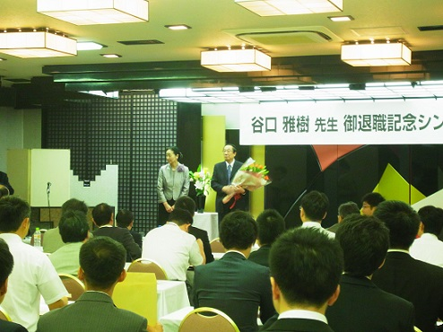

谷口雅樹名誉教授退官記念パーティー
2015年3月をもって広島大学理学研究科教授をご退職された谷口先生のこれまでのご功績を記念し、広島市内ホテルチューリッヒにて御退職記念シンポジウム・祝賀会が開催されました。 会場には、広島大学放射光科学センター設立に携わった関係者をはじめ、光物性研究室OBなど、多くの参加者が集まりました。谷口先生ご講演のシンポジウムでは、学生時代から、放射光施設設立の黎明期、HiSORの設立、そして近年の最先端研究に至るまでの数々のエピソードをお話しして下さいました。 東大物性研究所所属当時の写真を見る機会もあり、現場で作業を進める谷口先生の姿にはつらつとした印象を受けました。
シンポジウム後の祝賀会では、産学両界で活躍する多くの光物性研究室OBに囲まれて談話を楽しんでいらっしゃいました。 広島大学放射光科学センターを設立し、光物性研究室の学生をはじめ人材育成に力をそそいでこられた谷口先生ならではの光景でした。
今ここに、改めて敬意と感謝の気持ちを表したいと思います。 谷口雅樹先生、定年ご退官本当におめでとうございます。心からお祝い申し上げます。

パーティーの様子